Basic User Guide¤
This guide will walk you through the process of creating documentation for nbdev projects using Material for nbdev.
Quick summary¤
Here’s a quick comparison of Quarto and Material for nbdev development workflows:
| Quarto workflow | Material for nbdev workflow |
|---|---|
Install:
|
Install:
|
Setup:
|
Setup:
|
Development:
|
Development:
|
Commit changes:
|
Commit changes:
|
Installation¤
To complete this tutorial, you will need the following software and Python library:
- Python
- pip Python package manager
- Jupyter Notebook
- nbdev
- Quarto
- nbdev-mkdocs
It is recommended to use a virtual environment for your Python projects. Virtual environments are a common and effective Python development technique that helps to keep dependencies required by different projects separate by creating isolated Python environments for them.
In this tutorial, we will be using Python’s venv module to create a virtual environment.
Note
There are other great third-party tools for creating virtual environments, such as conda and virtualenv, For basic usage, venv is an excellent choice because it already comes packaged with your Python installation. Any of these tools can help you set up a Python virtual environment.
Creating and activating a new Python virtual environment¤
To create a new virtual environment with venv, open a new terminal session in the root directory of your new project and run the command below:
python3 -m venv venv
The above command creates a new virtual environment called venv. Please feel free to change the name if necessary.
Now your project has its own virtual environment. Generally, before you start using it, you’ll first need to activate the environment. Run the below command to activate your new virtual environment:
source venv/bin/activate
Installing the packages¤
Before we begin installing our project dependencies, let us first upgrade pip to ensure we are using the most recent packages by running the following command:
python3 -m pip install --upgrade pip
Now, install the Python packages required for our project by running the following command:
pip install notebook nbdev nbdev-mkdocs
Enter y (for yes) if prompted. Installation should take a few seconds, during which text will be printed in the terminal.
After installing the Python packages, run the following command in the terminal to install Quarto via nbdev’s CLI command:
nbdev_install_quarto
If prompted, enter your password in the terminal to continue installing Quarto. You can read the source code of the nbdev_install_quarto command for more information. Alternatively, you can follow the Quarto’s official installation instructions.
First steps¤
In this section, we will use the nbdev and nbdev-mkdocs commands to configure our new project with tests, continuous integration, and a documentation website built with Material for Mkdocs.
Creating a new GitHub repo¤
Create an empty GitHub repo using the convenient link github.com/new. If you get stuck, you might find GitHub’s Create a repo page helpful.
For this example, let’s name our repo nbdev_mkdocs_tutorial (feel free to change it) and add a nice description, as nbdev will use it later.
Note
Don’t add a README file, .gitignore, or license file just yet. nbdev will create necessary files when we Initialise the repo with nbdev new command
If you’re using the web interface, it should look something like this before you click Create Repository:
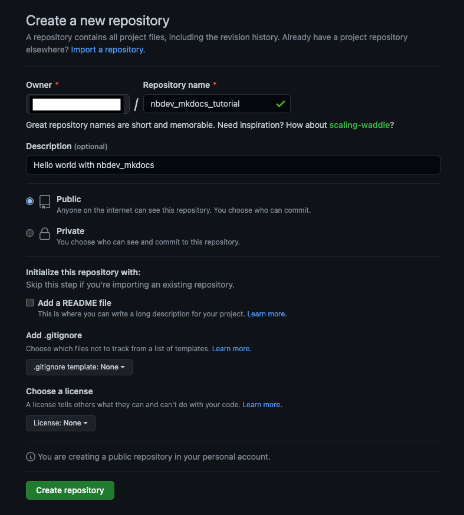
Now, click the Create Repository button to create a new repo.
You should then be redirected to your new repo:
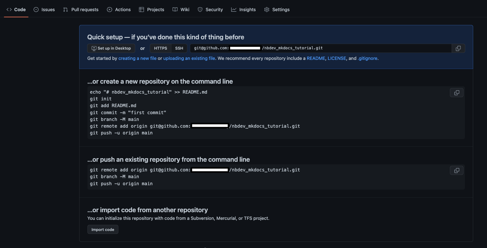
Before we continue, there is one last step we need to do. Go to the Settings tab and click on Actions -> General on the left side. Scroll down to the bottom of the screen and find the Workflow Permissions section. Make sure the Read and Write permissions is selected. If it is not, change it and then click Save button.
Note
Please ensure that the Read and Write permissions is selected under the Workflow Permissions section or the deploy action will fail.
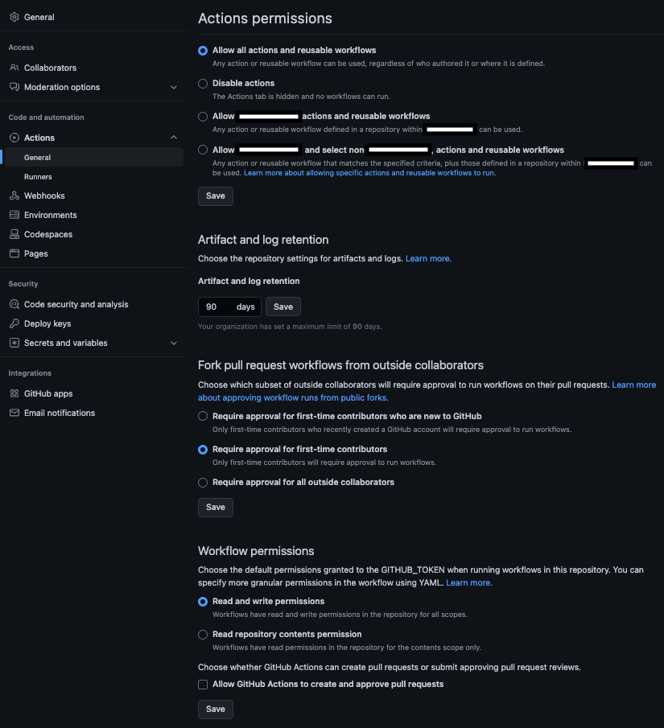
Initialising your repo with nbdev¤
Now clone your repo from the same terminal window. If you get stuck here, you might find GitHub’s Cloning a repository page helpful.
Since we created a repo named nbdev_mkdocs_tutorial, we can clone it as follows:
Note
In the following command:
- Replace {user} with your github username
- If you have used a different name for your repo, replace nbdev_mkdocs_tutorial with it.
git clone https://github.com/{user}/nbdev_mkdocs_tutorial.git
Then cd (change directory) to our repo:
Note
In the following command:
- If you have used a different name for your repo, replace nbdev_mkdocs_tutorial with it.
cd nbdev_mkdocs_tutorial
nbdev provides the nbdev_new command to initialise an empty git repository. It’ll infer information about your project from git and GitHub, and ask you to input anything remaining.
Let’s initialise our repo with nbdev by entering the following command:
nbdev_new
It may ask you to enter information that it couldn’t infer from git or GitHub.
Note
nbdev_new assumes that your package name is the same as your repo name (with - replaced by _). Use the --lib_name option if that isn’t the case.
Initialising your repo with nbdev-mkdocs¤
After you’ve installed nbdev-mkdocs, you can bootstrap your project documentation using the nbdev_mkdocs executable. From the project root directory and run the following command:
nbdev_mkdocs new
Using information from the project’s settings.ini file, the above command creates files and directories required to build the documentation and saves it in the mkdocs subdirectory.
Previewing the docs locally¤
To preview the Mkdocs for Material documentation locally, we must first install our library. To do so, execute the following command from the project’s root directory:
pip install -e '.[dev]'
Now, run the following command to preview your documentation:
nbdev_mkdocs preview
Note
If you encounter the error No module named nbdev_mkdocs_tutorial while executing the above command, please add your project root directory to the PYTHONPATH environment variable. One way to do this is by executing the following command from the project root directory.
export PYTHONPATH=$PYTHONPATH:`pwd`
In our example, the documentation will be served at the following URL:
Note
- If you have used a different name for your repo, replace nbdev_mkdocs_tutorial with it in the below command.
- By default, the documentation will be served on port 4000. However, you can change the port by passing the --port argument to the nbdev_mkdocs preview command. For more information, please run the nbdev_mkdocs preview --help.
http://0.0.0.0:4000/nbdev_mkdocs_tutorial/
Now, copy and paste the above URL into your preferred browser, and the documentation should look something like this:
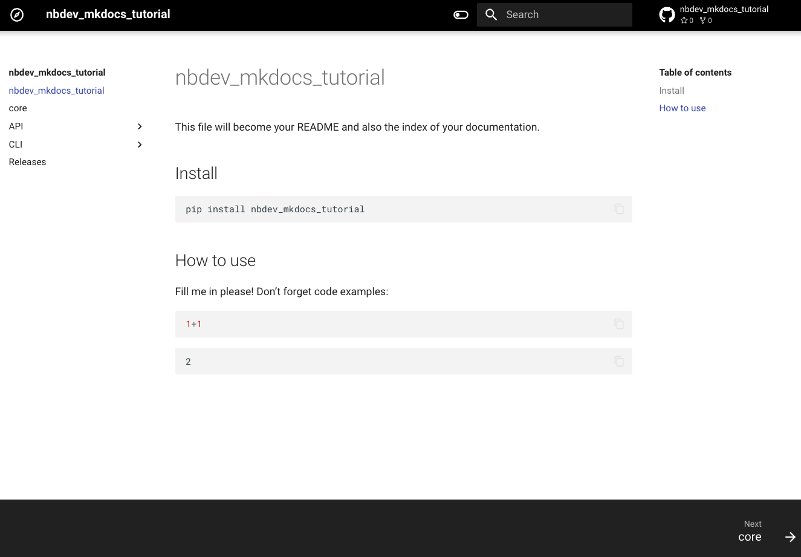
When you switch to the black theme, the page will look like this:
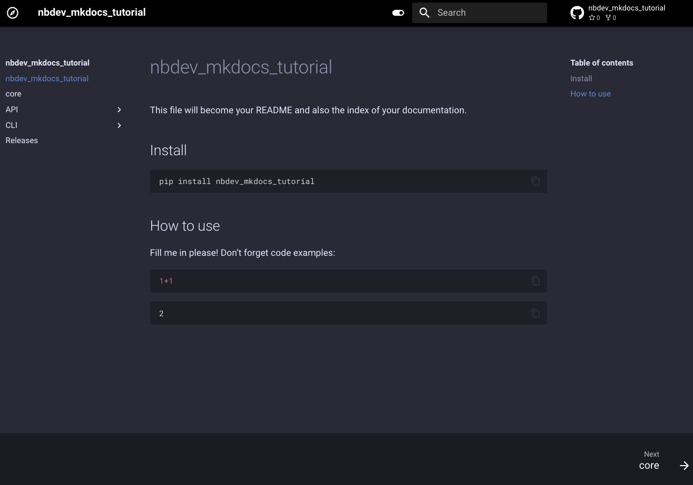
The website’s navigation structure can be divided into two parts. The
first section is built by reading the sidebar.yml or _quarto.yml
file from the nbs directory. The second part of the navigation structure
includes specific sections for the API, CLI, and Releases.
Now it’s time to commit your changes to git and publish the
documentation to GitHub Pages. We recommend running the
nbdev_mkdocs prepare command in the terminal before committing to Git,
which exports the library, tests and cleans notebooks, and generates the
README file if necessary.
nbdev_mkdocs prepare
Finally, double-check your settings.ini file and push your changes to GitHub
Note
Before pushing to GitHub, please ensure that the latest version of nbdev-mkdocs is included in the dev_requirements section of the settings.ini file.
git add .
git commit -m'Initial commit'
git push
Checking out your workflows and docs¤
From the GitHub web interface, open GitHub Actions by clicking the Actions tab near the top of your repo page. You should see two workflow runs:
- CI - The CI workflow clears the unwanted metadata from notebook and runs the tests.
- Deploy to GitHub Pages – Builds your docs with Material for Mkdocs and deploys it to GitHub Pages.
Note that you’ll need to enable GitHub Pages for your repo before you can access your docs website. We’ll do that now.
Once the above two actions are completed successfully, you can enable it for your repo by clicking on the Settings tab near the top-right of your repo page, then Pages on the left, then setting the Branch to gh-pages, and finally clicking Save.
It should look similar to this after you click Save:
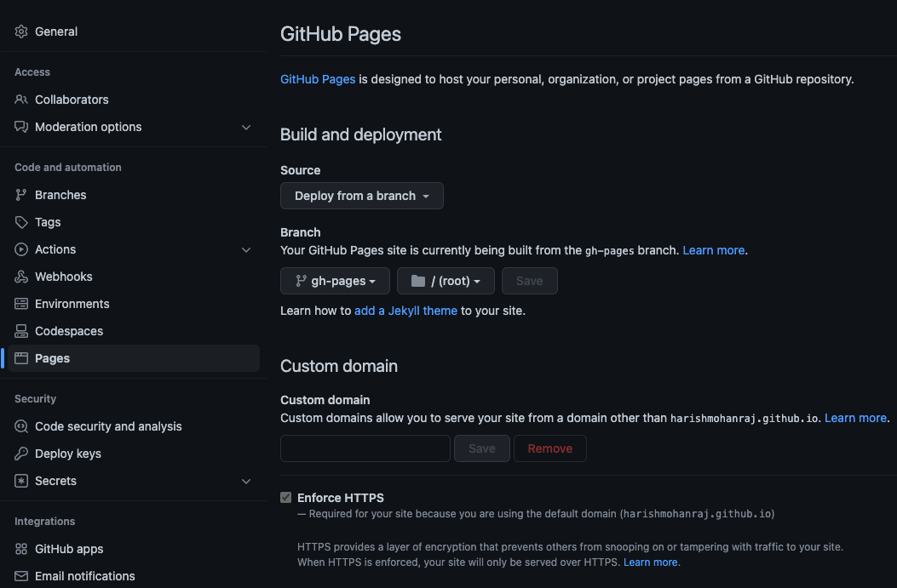
Head back to GitHub Actions and you should see a new workflow run: pages build and deployment. As the name says, this workflow deploys your website contents to GitHub Pages.
Wait for the workflow run to complete, then open your website. By default it should be available at:
Note
In the following URL:
- Replace {user} with your github username.
- If you have used a different name for your repo, replace nbdev_mkdocs_tutorial with it.
https://{user}.github.io/nbdev_mkdocs_tutorial
Recap¤
You now have a base nbdev repo with continuous integration and hosted documentation! Here’s a recap of the steps you took:
- Created a GitHub repo.
- Initialised your repo with nbdev_new.
- Initialised your repo with nbdev_mkdocs new.
- Installed the package with pip install ‘.[dev]’.
- Previewed the documentation with nbdev_mkdocs preview.
- Exported the library, tested it, and cleaned the notebooks using nbdev_mkdocs prepare.
- Pushed to GitHub.
Adding documentation¤
In this section, you’ll will learn how to add documentation for functions, classes, and CLI commands.
Installing hooks for git-friendly notebooks¤
When working with Jupyter notebooks in a new repo, the first step is to install nbdev’s hooks. See Git-friendly Jupyter for more information.
Install the nbdev’s hooks by running the following command into your terminal:
nbdev_install_hooks
Note
You can also add new requirements to your project by editing the settings.ini file. When you do so, please make sure to install the library locally by running pip install -e '.[dev]' command. Otherwise, you will not have the new requirements installed in your environment.
Now, let’s start the Jupyter notebooks by executing the command below:
jupyter notebook
Note: Before continuing, please ensure that the jupyter notebook is running on the newly created virtual environment.
This should open the Jupyter home page in a new browser tab:
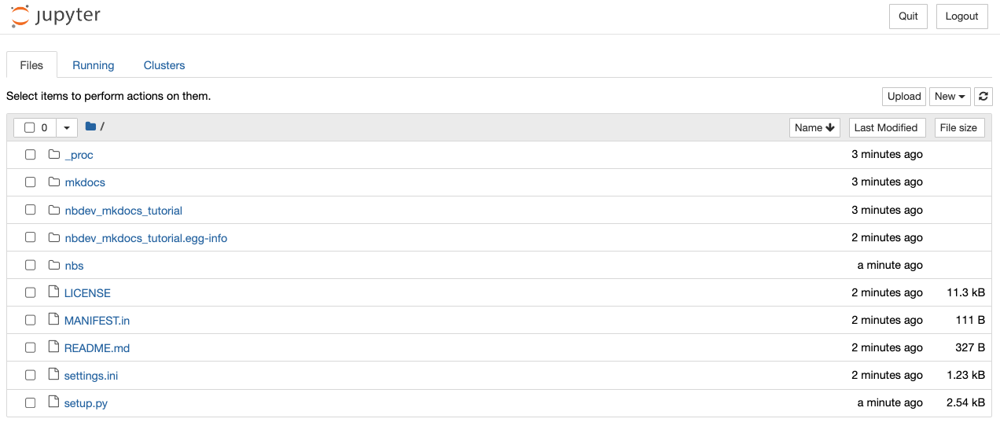
Documenting a function¤
Now, let’s add a sample docstring to an existing function in
00_core.ipynb notebook. Please open the 00_core.ipynb notebook
present inside the nbs directory and add the docstring
Docstring for foo to the function foo, or copy and replace the cell
contents with the below sample code:
#| export
def foo():
"""Docstring for `foo`"""
pass
After adding the docstring, save the notebook and run the following command in the terminal to preview the changes in the browser:
nbdev_mkdocs preview
Click on the API menu in the sidebar, and the documentation should
look like:
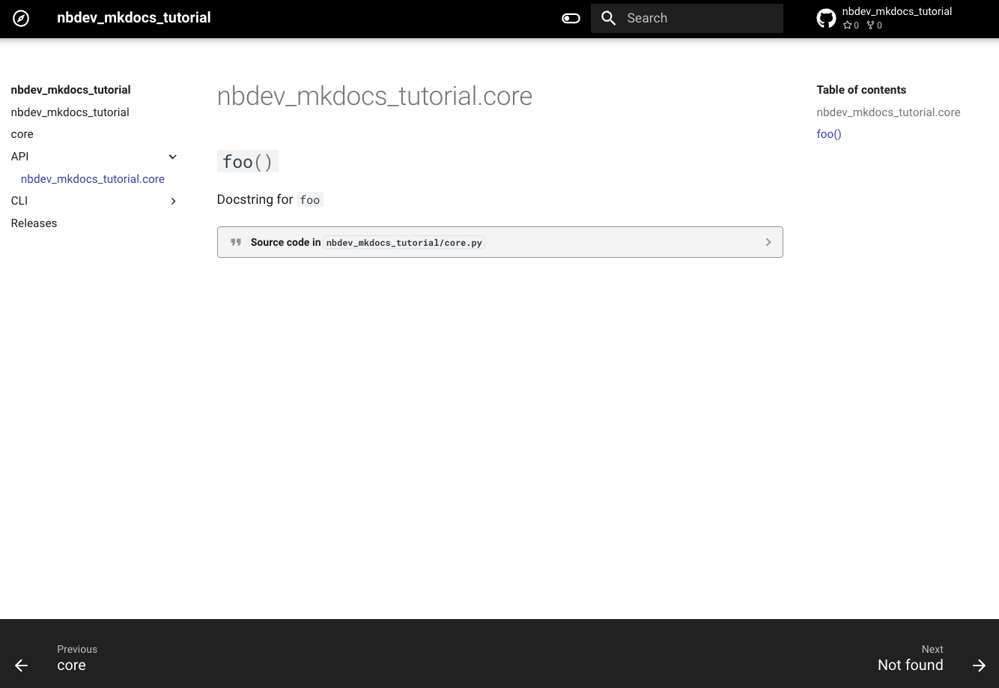
Now let’s add a new function in the same notebook, create a new code
cell below the foo function cell and paste the following code:
#| export
def say_hello(to: str) -> str:
"""Say hello to somebody
Args:
to: Name to say `hello`
Returns:
A string with `Hello` prepended to the `to`
"""
return f'Hello {to}'
Save the notebook, stop the server and re-run the nbdev_mkdocs preview
command to preview your changes.
Click on the API menu in the sidebar, and the documentation should
look like:
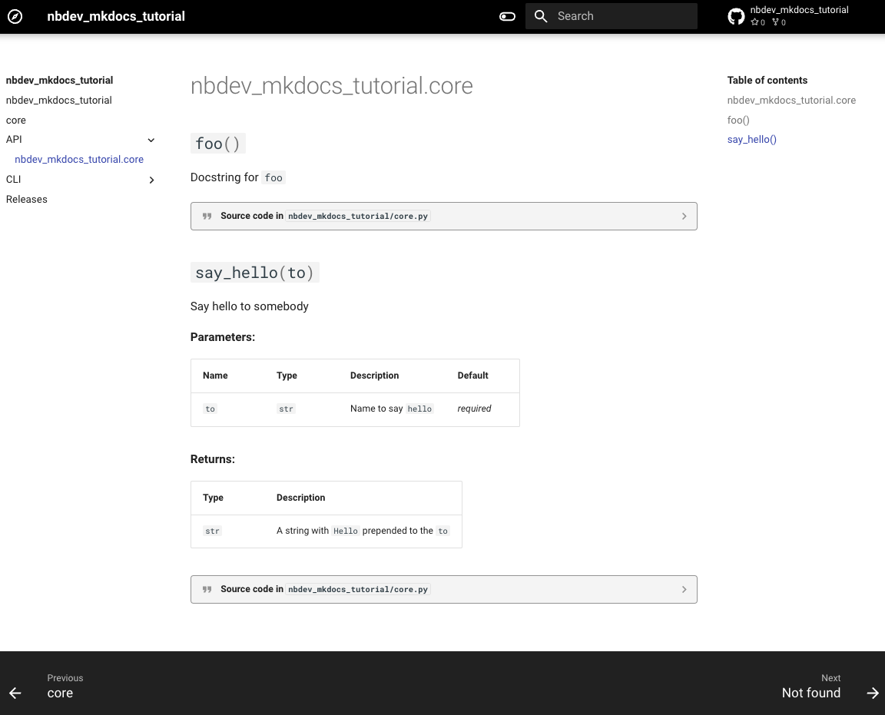
Documenting a class¤
Now, in the same notebook, create a new code cell below the say_hello
function cell and paste the following code:
#| export
class HelloSayer:
"""Say hello to `to` using `say_hello`"""
def __init__(self, to): self.to = to
def say(self):
"""Do the saying"""
return say_hello(self.to)
Save the notebook, stop the server and re-run the nbdev_mkdocs preview
command to preview your changes.
Click on the API menu in the sidebar, and the documentation should
look like:
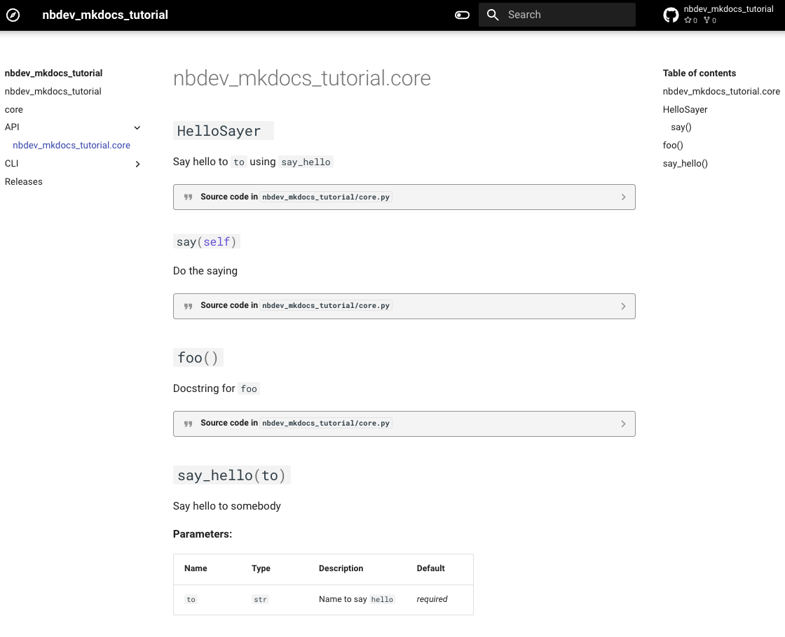
Documenting a CLI command¤
Before we get started writing documentation for our first CLI command, let’s take a look at what we already have in the CLI documentation. Just click on the CLI menu in the sidebar to view it. The documentation should look like:
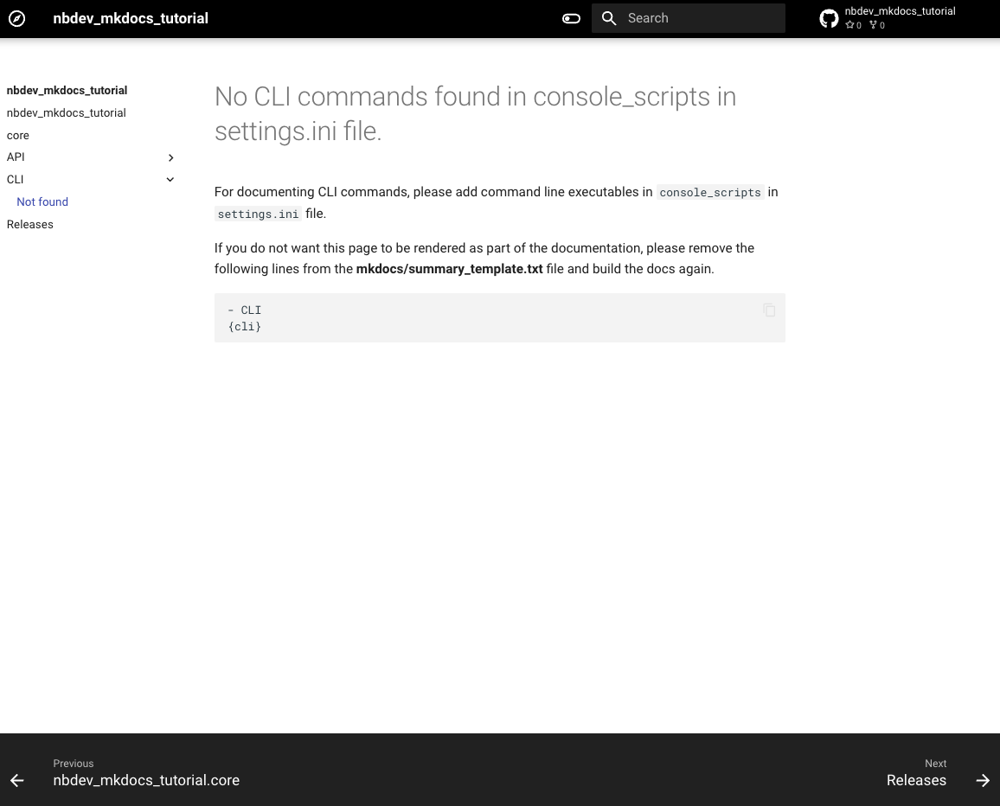
This default page will be displayed when the console_scripts section
of the settings.ini file does not include any command line
executables.
Now let’s move on to writing our first CLI command and adding it to the documentation.
Let’s now convert our say_hello function into a command-line script
and generate documentation for it by following the steps below:
Create a new code cell above the say_hello function cell and copy
paste the below code to import the call_parse from fastcore:
#| export
from fastcore.script import call_parse
Add the call_parse decorator to our say_hello function. After adding
the decorator, the say_hello function should look like:
#| export
@call_parse
def say_hello(to: str) -> str:
"""Say hello to somebody
Args:
to: Name to say `hello`
Returns:
A string with `Hello` prepended to the `to`
"""
return f'Hello {to}'
Save the notebook and run the following command from the project root directory to add the console script to the settings.ini file:
echo "console_scripts = say_hello=nbdev_mkdocs_tutorial.core:say_hello" >> settings.ini
Finally, run the following commands in the terminal to build the library and preview the changes in the browser:
pip install '.[dev]' && nbdev_mkdocs preview
Click on the CLI menu in the sidebar, and the documentation should
look like: 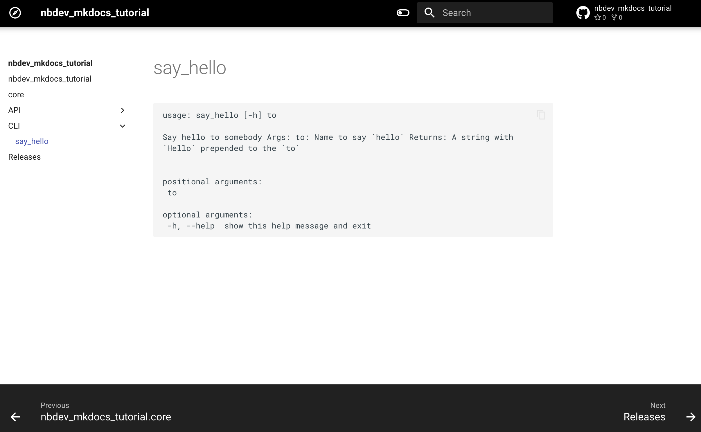
nbdev-mkdocs will also generate documentation for CLI commands created
using Typer
and populates the same under the CLI tab.